8 Instance pages - Content
Your training instance website now has its overview page, syllabus, team and other information pages, all built from data files. What’s still missing are the training materials: the pages participants work through. They are the heart of your training instance website.
The training materials work differently from the rest of the website. They aren’t built from data files: you write them yourself, as pages in Markdown, a simple way of formatting text. Each page with training material is a .qmd file in the content folder.
Next to your training materials, you can also write instructor notes, in the instructors folder. Where the training materials tell participants what to learn, the instructor notes tell instructors how to teach it. These are written in Markdown too.
In this chapter, you will learn how to:
- Organise your training sections and pages: divide your training materials into sections, such as modules or days, and add them to the navigation of your website.
- Add content to your pages: Write your training materials in Markdown, with text, images, presentations and links.
- Write instructor notes: describe how to teach your training, for everyone who teaches or reuses it.
Before you start
Where
On the branch of your training instance, for example release-2706. Your materials go in the content folder, and the notes for other instructors in the instructors folder. Not on that branch yet? See Switch branch.
How
Start the preview, make your changes, and commit and push them, as described in Regular workflow. You can commit several changes together.
For experts
Know your way around already? The cheat sheet sums up which file to open, and what to change, for each part of your training materials.
8.1 Organise your training sections and pages
Before you write your training materials, you first have to decide how to organise them. Most of your training materials are in the content folder of your training instance branch: the content pages of your website are built from there. In this section, you will learn how the content folder is organised, how to divide your materials into sections, how to add and remove sections, and how to make them appear on your training instance website.
Where your training material lives
You write your training materials in the content folder of your training instance branch. The content folder contains:
index.qmd: the Content introduction page, which introduces your materials and gives an overview of the sections. This file must keep the nameindex.qmd: the Content link in the navigation bar leads to it._metadata.yml: the settings for all pages in thecontentfolder, such as the table of contents on the right. You don’t need to change this file.- One folder for each section, with one
.qmdfile for each page in that section.
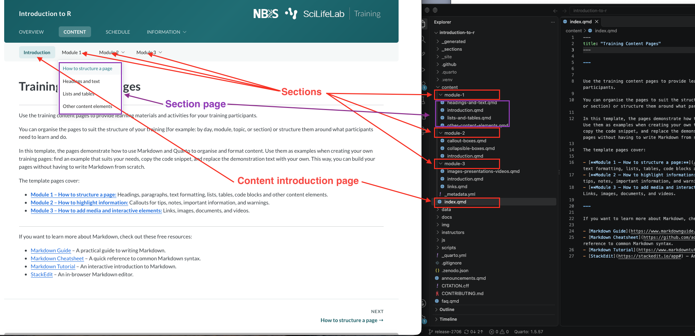
As you can see, your training materials are divided into content sections. The template’s examples use modules: module-1, module-2 and module-3. But sections don’t have to be modules: you decide yourself how to organise your training materials. For example, a section can be a module, a day, a topic or a week. Choose what fits your training,
On the website, each section gets its own dropdown menu in the navigation bar of the content pages, listing the pages in that section: see the purple boxes and text in the image above.
For example, Introduction to R is a training of three days, with a few topics each day. Its content folder could look like this, with one section per day:
content/
├── _metadata.yml Settings for the content pages: leave as it is
├── index.qmd The Content introduction page: keep this name
├── day-1/ A section, with its pages:
│ ├── introduction.qmd
│ ├── rstudio-basics.qmd
│ └── reading-data.qmd
├── day-2/
│ ├── tidy-data.qmd
│ └── filter-and-reshape.qmd
└── day-3/
├── introduction-to-ggplot2.qmd
└── customise-your-plots.qmdAdd a content section
When you’ve decided how to organise your materials, you can start adding your content sections.
- Create its folder in the
contentfolder, with its pages. - List the folder in
data/website.yml.
A folder that isn’t listed in data/website.yml doesn’t appear on the website.
Step 1: Create the folder and its pages
In the Explorer panel in VS Code, right-click the
contentfolder, and choose New Folder….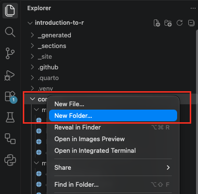
Type the name of the folder, and press Enter. Use only lowercase letters, numbers and hyphens: no capital letters, and no spaces. For example:
day-1,data-wranglingormodule-4.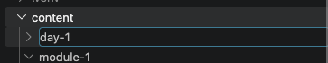
Right-click your new folder, and choose New File….
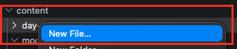
Type the name of the page, ending in
.qmd, and press Enter. For example:introduction.qmd. Use lowercase letters, numbers and hyphens here too.The new file opens. Type this header at the very top, with your own title, and save the file:
--- title: "Introduction" order: 1 ---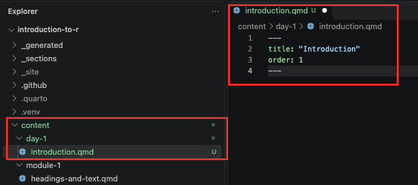
Add more pages to the folder in the same way, with
order: 2,order: 3, and so on.
The pages appear in the section’s menu in the navigation bar, in the order of their order numbers. To change the order, change the numbers.
For example, these are the section folders and pages of Introduction to R:
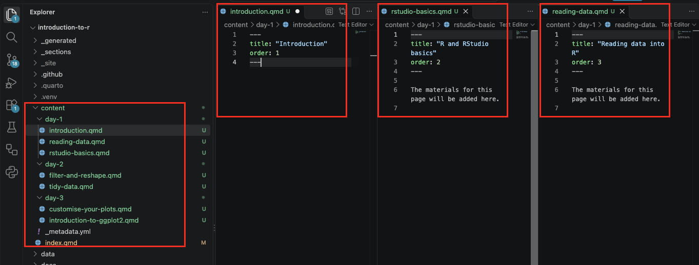
Want to look up how to write something in Markdown? Keep the template’s example pages for now: don’t delete their folders, module-1 to module-3. In the next step, you’ll see how to keep them off your website, while they stay in your repository for you to look at.
Step 2: List the section in website.yml
Your new sections and pages are now in your repository, but they don’t appear on your website yet. To make them appear, list each section in data/website.yml:
Open
data/website.yml, and scroll to thecontentpart at the bottom. Each section has an entry of three lines, like this one from the template: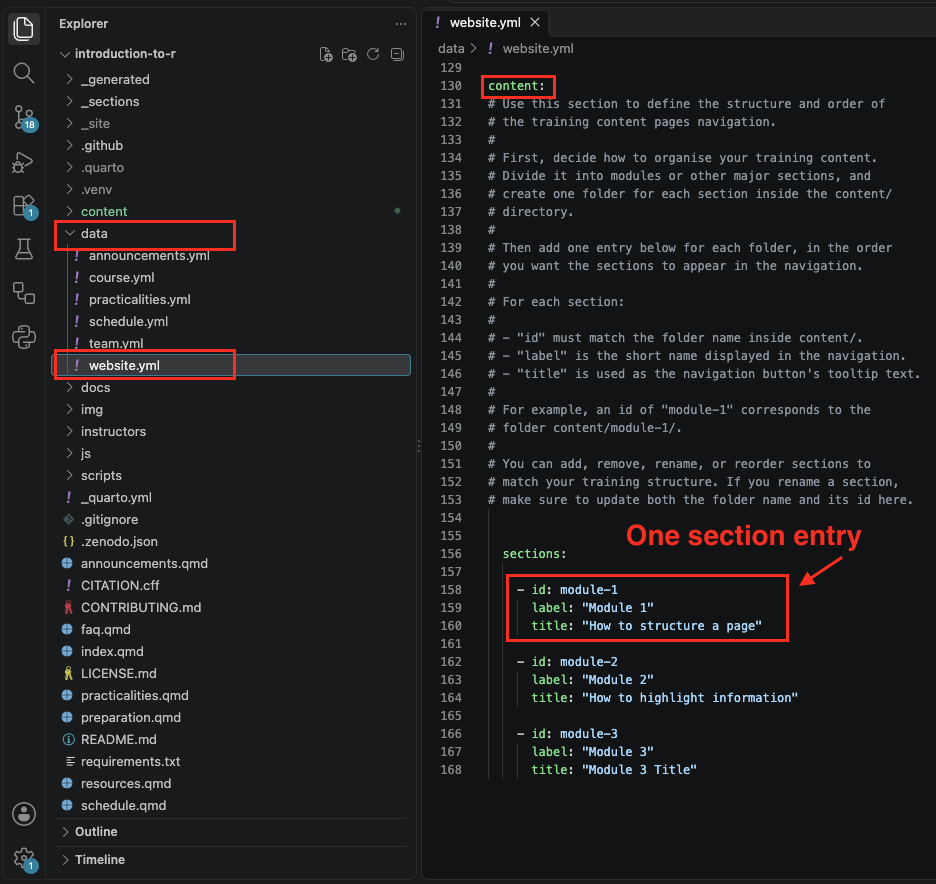
Copy a whole entry, from
- id:totitle:, and paste it below the last entry. Keep the spaces at the start of each line exactly as in the other entries.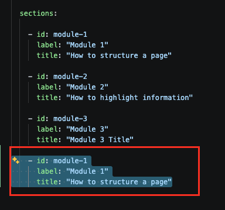
Change the three values to your new section
id: the name of your folder, exactly as you typed it in step 1, for exampleday-1for introduction to r.label: the short name in the navigation bar, for example"Day 1".title: the text visitors see when they hover over the section in the navigation bar, for example"Getting started".
The first time only: delete the entries of the template’s sections,
module-1tomodule-3, each from- id:totitle:. This only removes them from your website. Their folders stay in thecontentfolder, so you can still look at the example pages.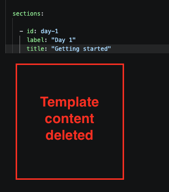
Save the file, and check the preview: your section appears in the navigation bar of the content pages.
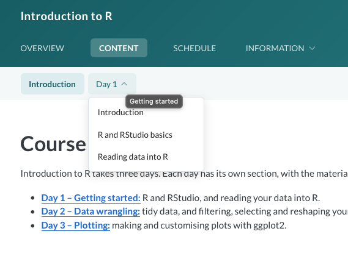
The id must be exactly the same as the name of the folder, letter for letter. If you rename a folder later, also change its id in data/website.yml, or the preview stops with an error that names the missing folder.
For example, this is the content part of data/website.yml for Introduction to R:
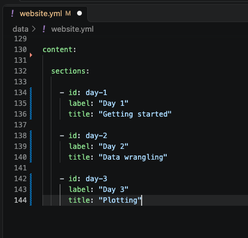
And this is how the sections appear on its website:
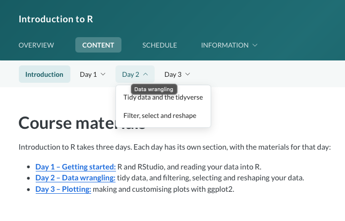
Remove a content section
You can remove a section in two ways:
- Only from the website: the section disappears from the navigation bar, but its folder and pages stay in your repository. Useful if you might need the section again later, or want to keep it as an example.
- Completely: the section disappears from the website, and its folder and pages are deleted from your repository.
To remove a section from the website only: in data/website.yml, delete the section’s whole entry, from - id: to title:, and save the file.
To remove a section completely, do these two steps, in this order:
- In
data/website.yml, delete the section’s whole entry. Save the file. - In the Explorer panel, right-click the section’s folder in the
contentfolder, and choose Delete. This deletes all its pages too.
Always delete the entry in data/website.yml first. If you delete the folder first, data/website.yml still lists a folder that no longer exists, and the preview stops with an error.
8.2 Add content to your pages
With your sections and pages set up, it’s time to fill the content pages with your training materials. In this section, you work through the parts of a content page: the content part, where you write your materials, and the On this page list and Previous and Next links, which are made automatically. The image below shows the parts of a content page:
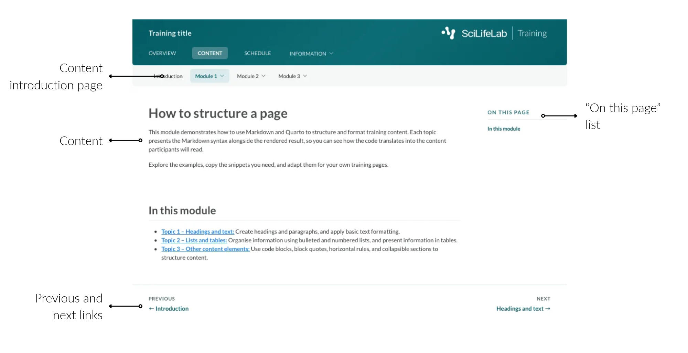
The content part
In the content part, you add the text, images, presentations, exercises and everything else of your training. You write it directly in the page’s .qmd file, below the header, in Markdown: a simple way of formatting text.
For help with Markdown, the template comes with its own guide: the example content pages. They show how to write headings, lists, tables, callout boxes, images, videos and links, each with the Markdown ready to copy and paste into your own pages.
Tips for adding images, PDFs and other files
To use images, PDFs, slides or data files on your pages, first put the files in the docs folder of your training instance branch:
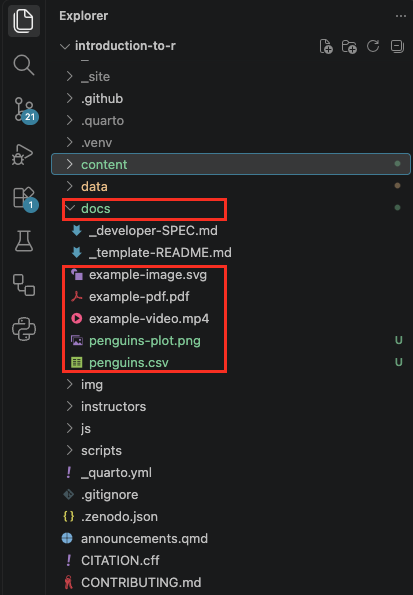
Then link to them from your pages: the example page Images, presentations and videos shows how.
- Only the files you link to from a page are published on your website. Files in
docsthat no page links to stay in your repository only. - Keep files small. GitHub warns about files over 50 MB, and large files make your repository slow to work with. For videos, an embedded online video, for example on YouTube, is usually the better choice.
- Give every image a short description, for visitors who can’t see it. The example page shows how.
Tips for adding presentations
To share presentations on your training instance website, you have several options:
| Option | Good to know |
|---|---|
| Upload files to the repository, for example PDF slides | Put the file in the docs folder, and link to it from your page: see Linking to a file or resource within your training repository. The file is kept in your repository, so it stays available as long as your repository does |
| Link to an online file, such as Google Slides | See Linking to resources hosted elsewhere. Easy to make and update together, but the link can stop working, or need access rights that others don’t have |
| Make presentations in Quarto | Part of your training website, and archived with it. More technical, and takes some getting used to |
Example: a page of Introduction to R
This example content page of Introduction to R has headings, an image, a link to a file in the docs folder, an exercise with a hidden solution, and some R code:
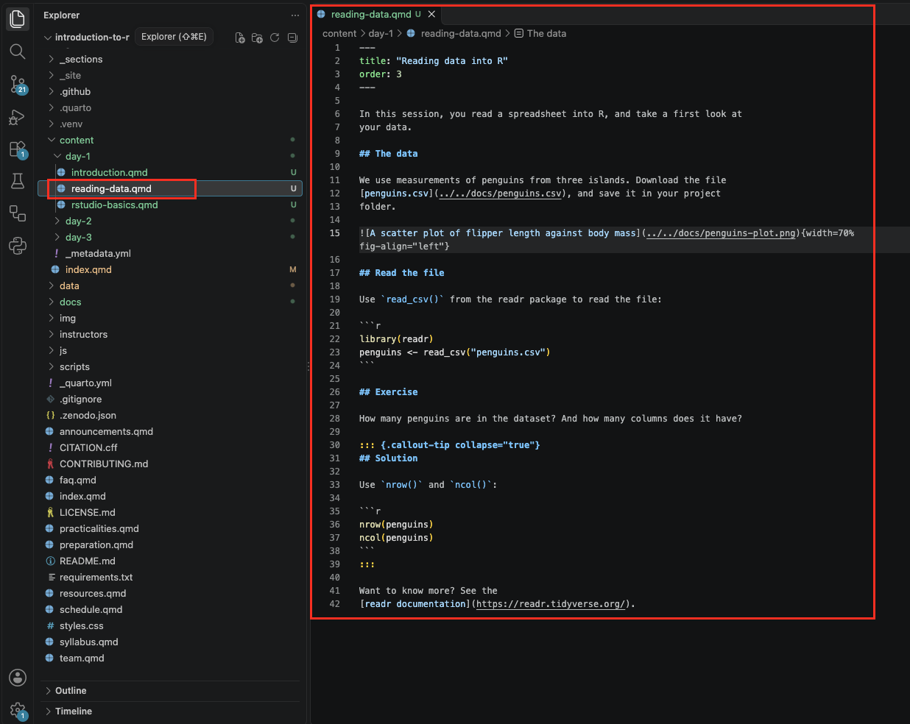
And this is how it looks on the website:
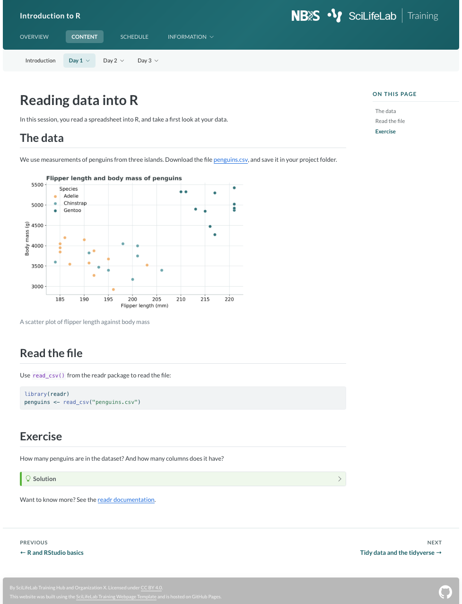
Code blocks are shown on the page, with a button to copy them, but they are not run when the website is built. Participants copy the code, and run it themselves.
Write your own pages.
With the example content pages and the tips above, start with the Content introduction page, content/index.qmd: introduce your training materials, and give an overview of your sections, with a link to the first page of each. Keep the file name index.qmd. Then work through the rest of your sections and pages.
The “On this page” list
The On this page list on the right of each content page is made automatically from the headings of the page:
- Headings starting with
##appear in the list. Use them for the main parts of a page. - Headings starting with
###don’t appear in the list. Use them for smaller parts within a main part. - Don’t use a heading starting with a single
#: the page title, from the header at the top of the file, is already the main heading.
Previous and next links
At the bottom of each content page, Previous and Next links lead through all your materials in one sequence: first the Content introduction page, then the pages of each section, in the order of the sections in data/website.yml and the order numbers of the pages. The last page of a section links to the first page of the next one.
The links are made automatically, and show the title of the page they lead to. To change where they lead, change the order of the sections or pages, as described in Organise your training sections and pages.
8.3 Write instructor notes
You have now added your training materials, which show participants what to learn. But your repository doesn’t yet say anything about how to teach those materials. That information is useful for everyone who teaches your training, and you can add it as instructor notes, in a separate folder: instructors.
In this section, you will learn why instructor notes are worth writing, what’s in the instructors folder, and how to write your own notes.
Why write instructor notes?
Instructor notes show instructors how to teach your training: for example, how long each part takes, what to prepare, and where participants usually get stuck. They are useful in different situations, for example:
- Several people teach the training, for example taking turns, or each teaching a different section.
- New instructors join, or the training is taught again a year later.
- Others want to reuse your training. With instructor notes, they can teach it themselves without having to ask you. That makes your training much easier to reuse, which is one of the aims of FAIR training materials.
What’s in the instructors folder
The instructors folder mirrors your content folder: one file for each section of your materials, plus a README.md for the training as a whole.
Unlike your materials, instructor notes are .md files, not .qmd files. That small difference decides where they show up:
Materials in content |
Instructor notes in instructors |
|
|---|---|---|
| File type | .qmd (Quarto Markdown) |
.md (plain Markdown) |
| Shown on your website | Yes: Quarto turns them into web pages | No: Quarto leaves them out |
| Where to read them | On your website, and in the preview | On GitHub, which shows .md files as formatted pages |
| Meant for | Participants | Instructors |
You write the content of both in the same way, with the same Markdown format. The only difference is the file extension.
For example, for Introduction to R:
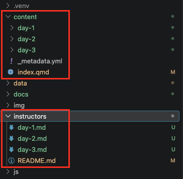
| File | What it covers |
|---|---|
README.md |
The training as a whole: who can teach it, the timing of each section, how to prepare, the technical setup, and what to do during and after the training |
One file per section, named after its folder, for example day-1.md, module-1.md or data-wrangling.md |
That section: its key points, teaching flow, materials, exercises, common problems, and what to skip if you’re short of time |
Fill in the instructor notes
You are now ready to fill in the instructor notes. You don’t have to start from scratch: the template’s instructors folder comes with a skeleton to fill in. It has a README.md for the training as a whole, and module-1.md and module-2.md for its example sections. Use these files as a starting point: rename them, copy them, and fill them in. You’re also welcome to change the headings, or to write your notes in your own way: the skeleton is a suggestion, not a rule.
Anyone can read your instructor notes on GitHub, and if you choose to publish your repository on Zenodo, they are archived together with your materials.
Never write anything that must stay secret, such as passwords, access codes, or answers to exams and graded assignments. Once pushed, deleting it doesn’t remove it: it stays in the history of your repository.
- Open
instructors/README.md, and replace the example text with your own. - Rename
module-1.mdafter your first section: right-click it in the Explorer panel, choose Rename…, type the new name, for exampleday-1.md, and press Enter. Keep the.mdat the end, not.qmd. Then fill in the file. - For each other section, add an instructor file with the same name as the section’s folder. The easiest way is to copy a file:
- In the Explorer panel, right-click an existing section file, for example
day-1.md, and choose Copy. - Right-click the
instructorsfolder, and choose Paste. - Right-click the copy, choose Rename…, type the new name, for example
day-2.md, and press Enter.
- In the Explorer panel, right-click an existing section file, for example
- Delete the template files you don’t use, such as
module-2.md. - In the timing table in
instructors/README.md, add a row for each section, with a link to its file. - Save your files, and commit and push them. As instructor notes are
.mdfiles, they don’t appear in the preview or on your website. To see how they look, open them in your repository on GitHub.
For example, this is instructors/README.md for Introduction to R:
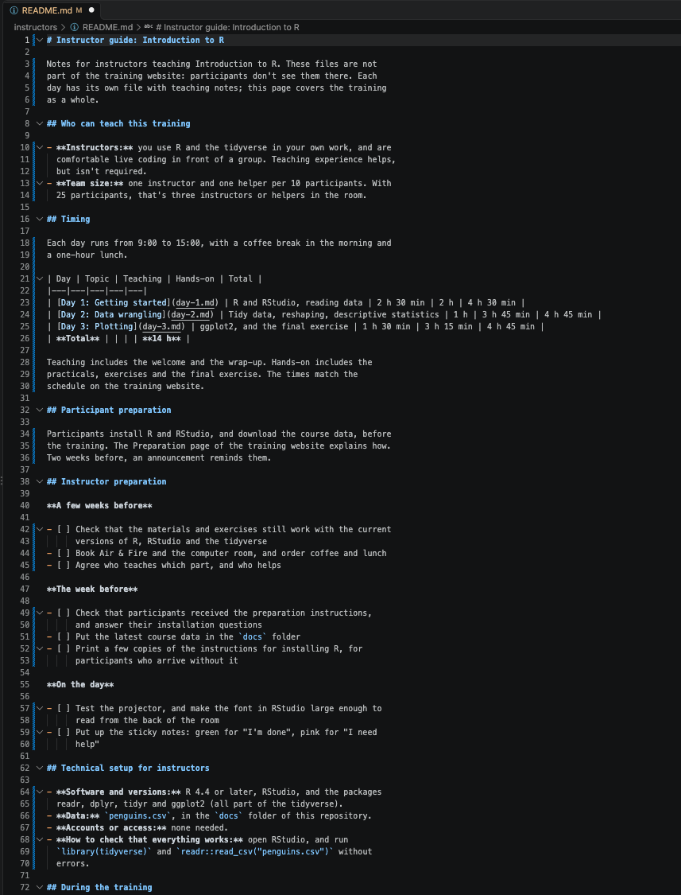
And these are the instructor notes for its first day, day-1.md:
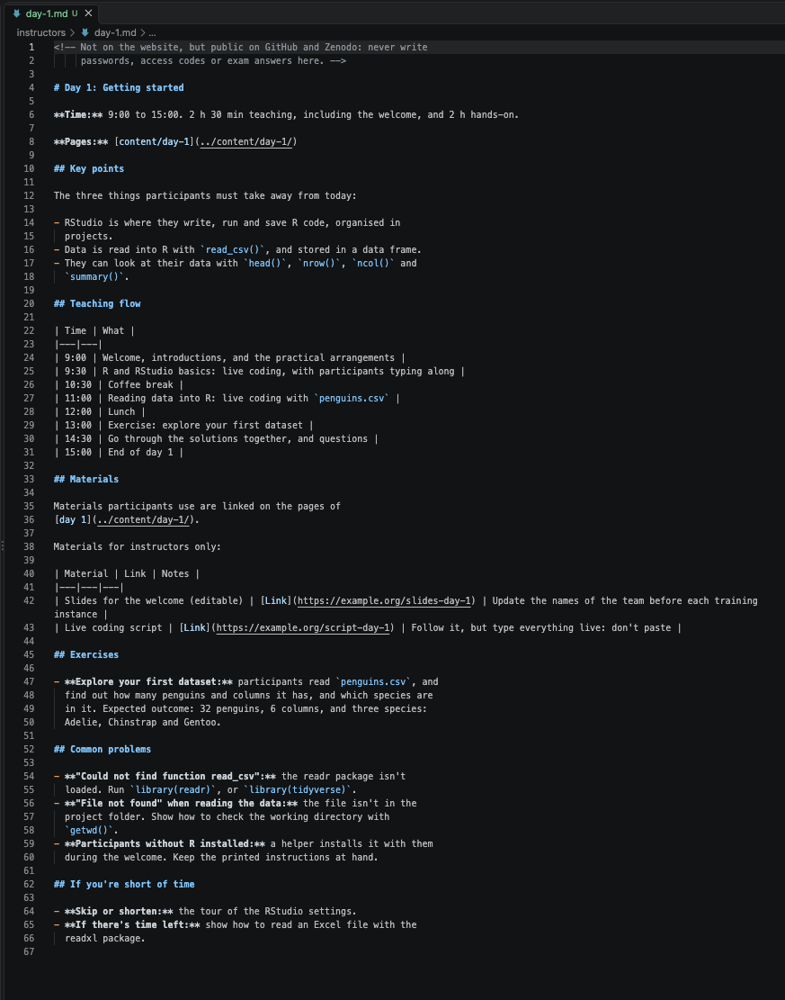
8.4 Cheat sheet
| To… | Where | What to do |
|---|---|---|
| Add a section | content/ and data/website.yml |
Create a folder with its pages, and add an entry under content → sections, with the folder’s name as id |
| Reorder sections | data/website.yml |
Move whole entries up or down under content → sections |
| Remove a section | data/website.yml, then content/ |
First delete its entry, then its folder |
| Add a page | The section’s folder | Add a .qmd file with title and order in the header at the top |
| Reorder pages | The pages’ .qmd files |
Change the order numbers |
| Add a part to “On this page” | The page’s .qmd file |
Start its heading with ## |
| Add images, PDFs and other files | docs/ |
Put the file in the folder, and link to it from the page |
| Write instructor notes | instructors/ |
Fill in README.md and the file for each section |
| Add or remove a section’s instructor notes | instructors/ |
Add or delete the file with the section’s folder name, and its row in the timing table in README.md |